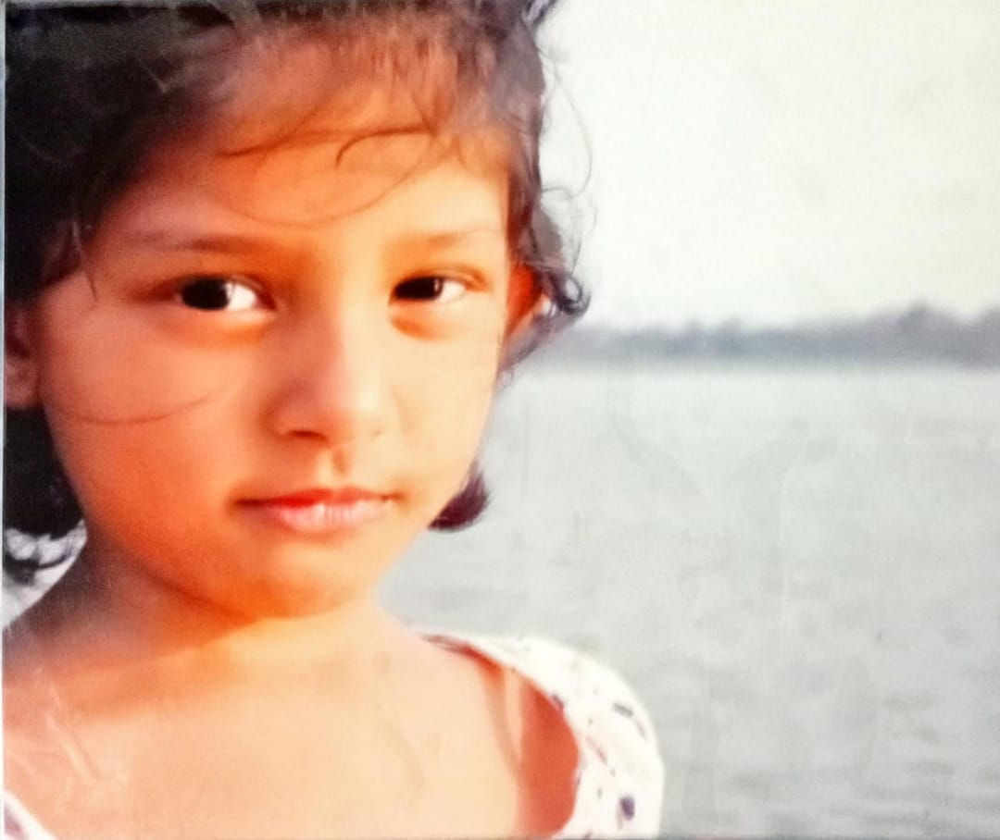
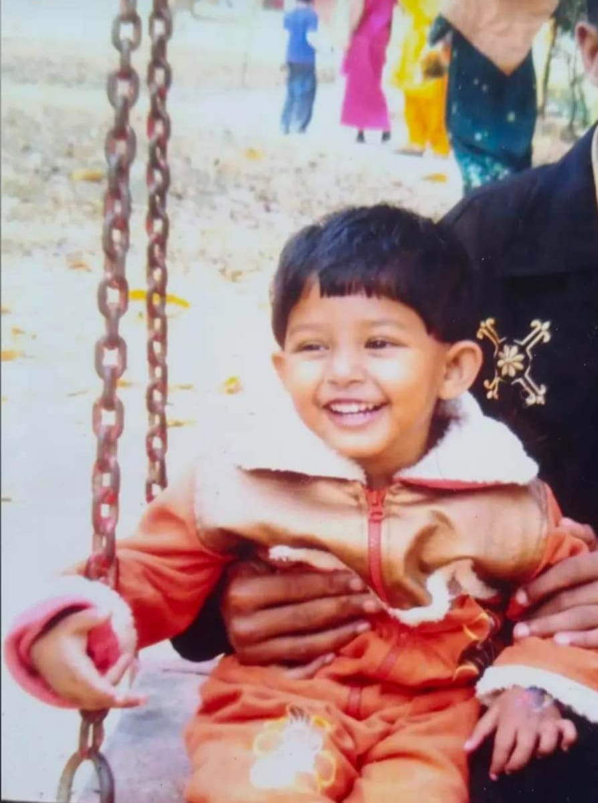
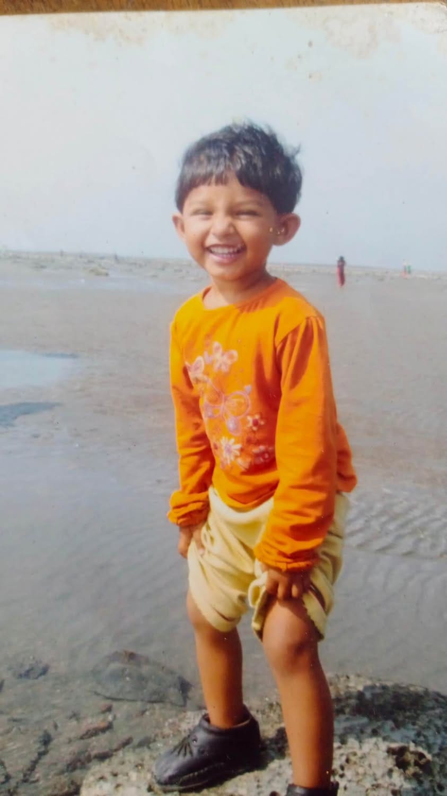
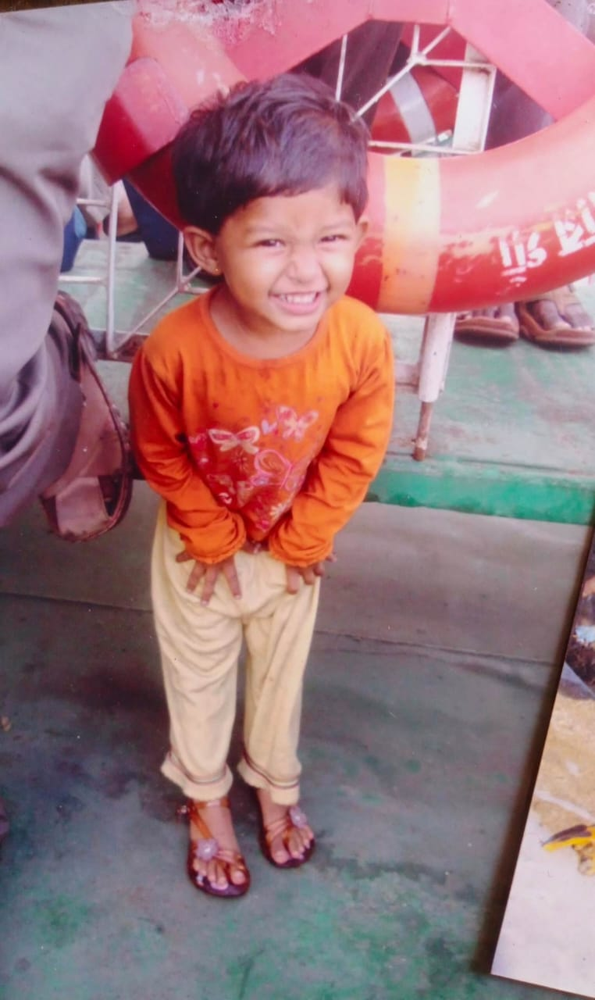
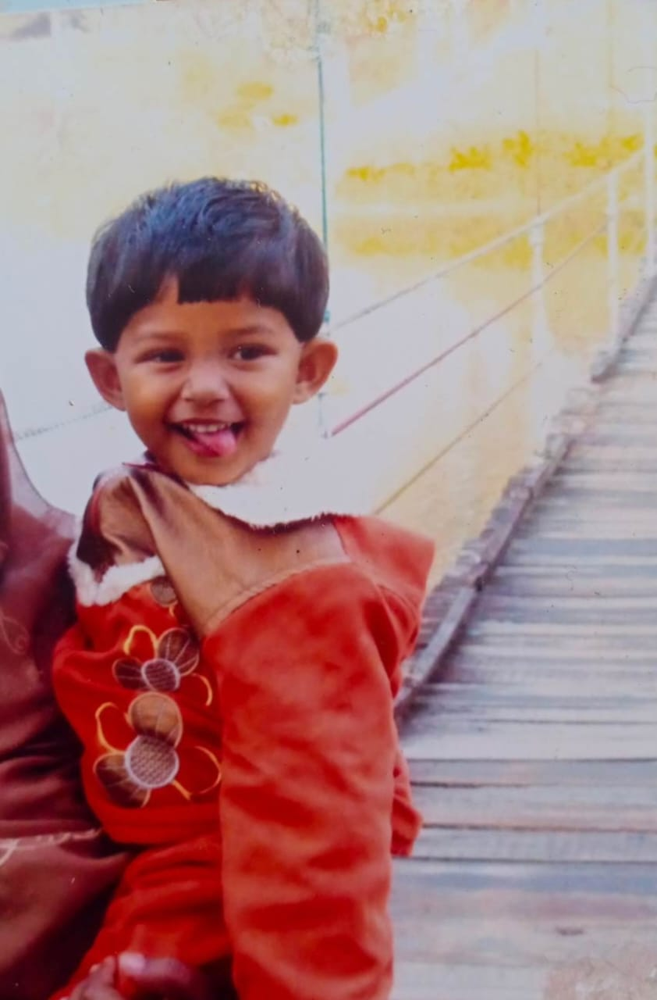
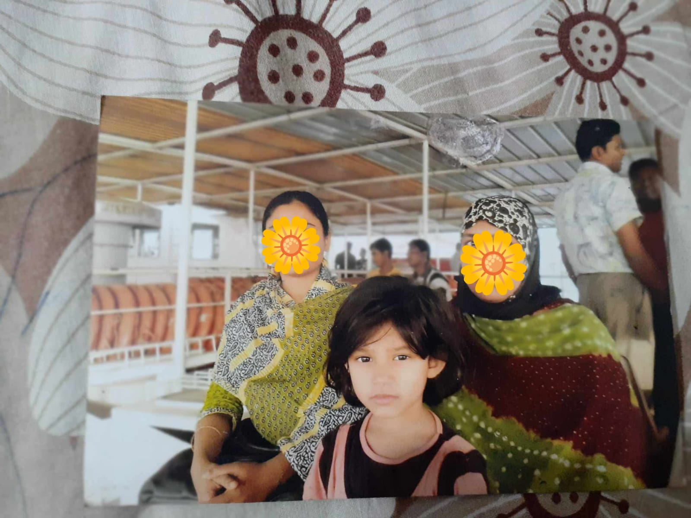

a little something, made just for my Afiiii <'3
I thought about just sending a text. Then I thought, nooooo. Everyone wishes you on your birthday and it's such a low effort thing, but I wanted to make real effort for you, I didn't just wanted to wish you simply that you'll probably forget after a while.You deserve a whole tiny corner of the internet, so I built for no one else but you. So here it is darling....






I like the things about you that you probably don't think are worth mentioning. The tiny things. The almost invisible things.
I like your random thoughts, your little habits, your expressions, your stories. The way you look when you're lost in thought. The way you become completely yourself when you're comfortable.
I like the way you laugh. The way you get excited over little things. The way you remember things you probably don't realize I noticed.
You have opinions about everything, and somehow you're rarely insufferable about it.
The way you say "okay, but hear me out" before every slightly unhinged idea.
You make ordinary afternoons feel like they're worth remembering.
If you were a color, you'd be the one right before the streetlights come on not quite dusk, not quite evening.
If you were a place, you'd be somewhere small and slightly too loud, where nobody's in a hurry to leave.
If you were a sound, you'd be laughing in another room, before I even know what's funny.
If you were a season, you'd be the first genuinely warm day in March, the one that fools everyone into thinking winter's over.
If you were a song, I think you already know which one.
Afifa,
I thought about writing something impressive for this. I kept starting sentences and deleting them, because they all sounded like things people write when they don't actually know the person they're writing to.
So instead, I'll just say what's true. You're one of the people I don't have to perform for. I can be in a bad mood around you, or say something stupid, or go quiet for no reason, and none of it costs me anything with you. That's rarer than people admit.
I don't know exactly what this year holds for you. But I hope it's full of the kind of days you don't think to photograph, because you're too busy actually living them.
This isn't a grand gesture. It's just a small, slightly ridiculous website. Because you deserved more than a text that says "happy birthday!!"
Happy birthday, Afifa.
Your Andu
tap the flame
Make a wish.
Keep being you.
The world is a little better with you in it.
Happy Birthday, Afifa Mehjabin. ♡